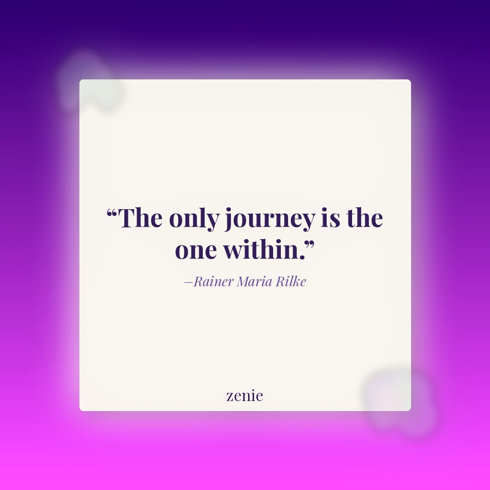
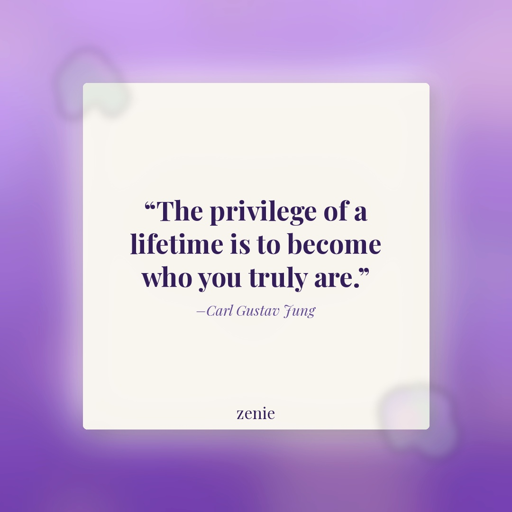

Meme 1
She's delusional (in the best way) 🌙
Best time: Tuesday 7–9 PM EST
She's delusional (in the best way) 🌙
Best time: Tuesday 7–9 PM EST
The cognitive dissonance is real 😭
Best time: Wednesday 6–8 PM EST
@journaling (Instagram journaling content creator)
Save this for your next journaling session 📓 These prompts will change the way you see yourself. 💜 Drop '✨' below if you journal regularly! #Zenie #zenieapp #JournalingPrompts #SelfReflection
Watch ReelBest time: Monday 7–9 PM EST
@journalingoutloud (journaling / mental wellness creator)
Taking care of your mind is the most important thing you can do 🌸 Save this reel and share it with someone who needs a reminder. 💜 #Zenie #zenieapp #MentalWellness #JournalingLife #MindfulLiving
Watch ReelBest time: Friday 7–9 PM EST

Sometimes a single line can shift your whole day. ✨ Save this one for a quiet moment. What does your inner journey look like right now? 💜
Best time: Thursday 7–9 PM EST

This one hits different when you're in the middle of a transformation. 💜 Save it for the days you forget who you're becoming. Share with a friend who's growing.
Best time: Sunday 10 AM–12 PM EST